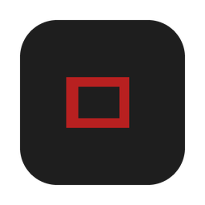
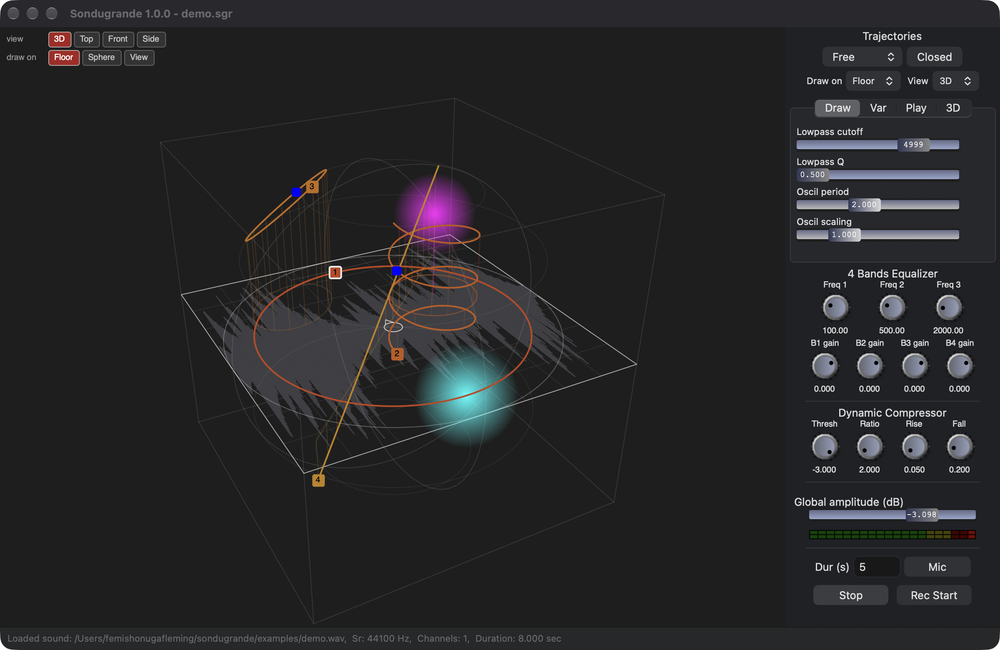
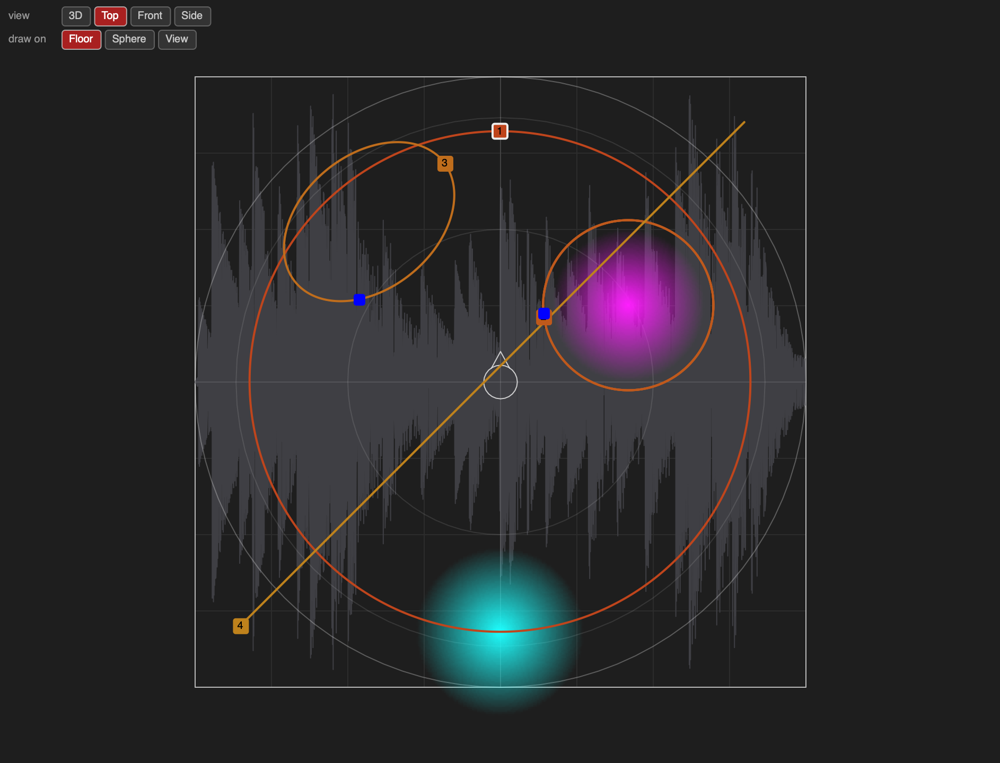
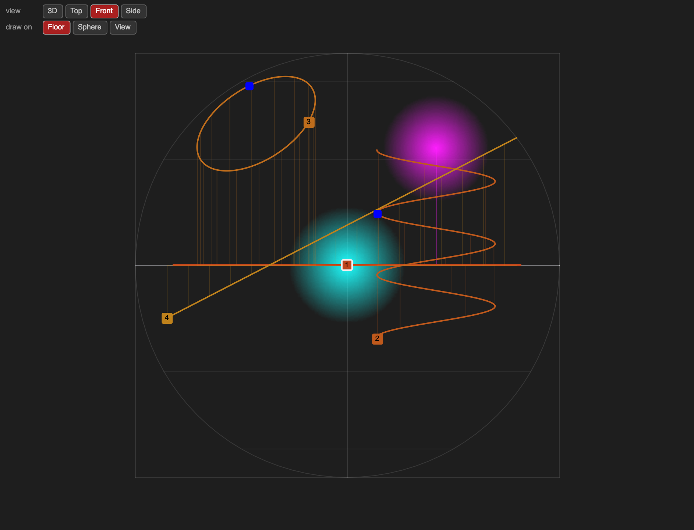
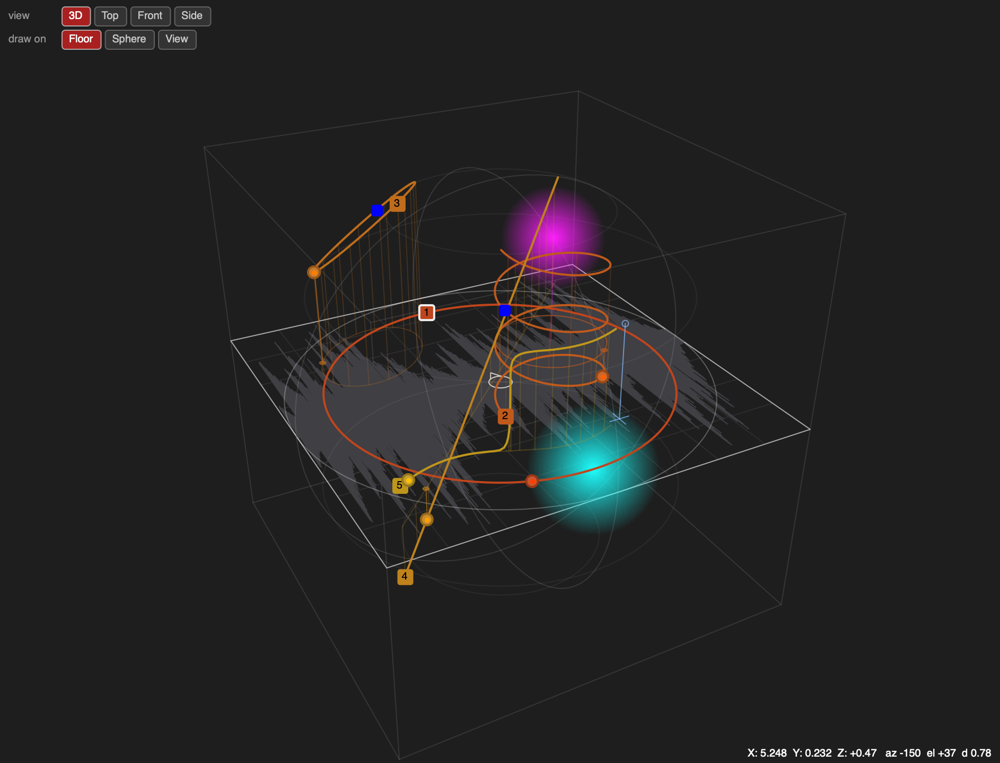
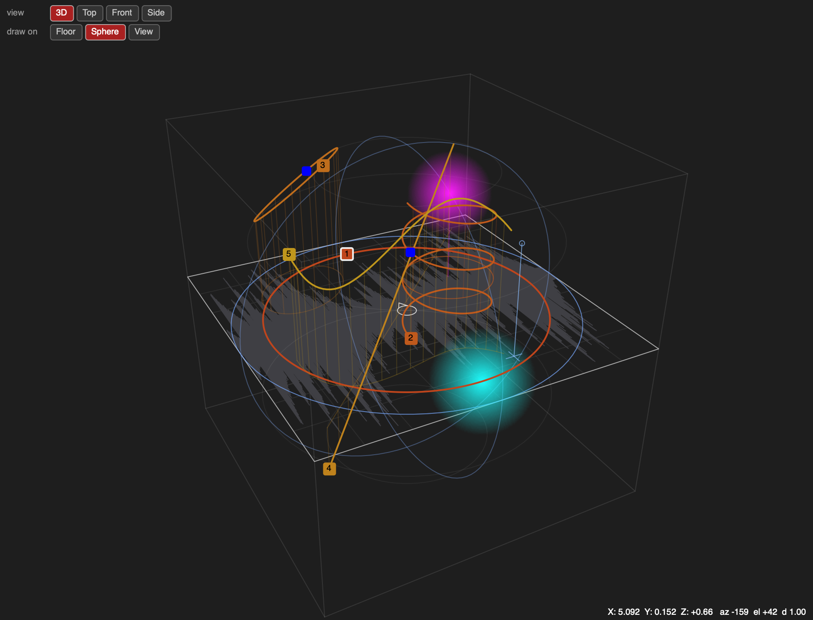
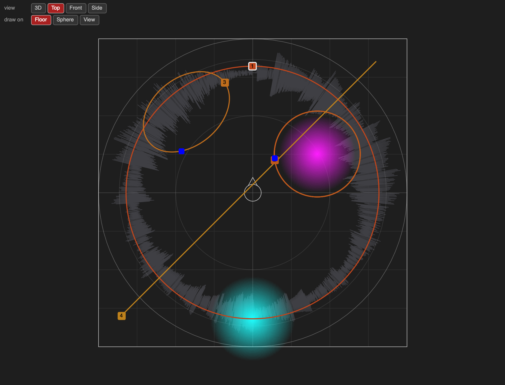
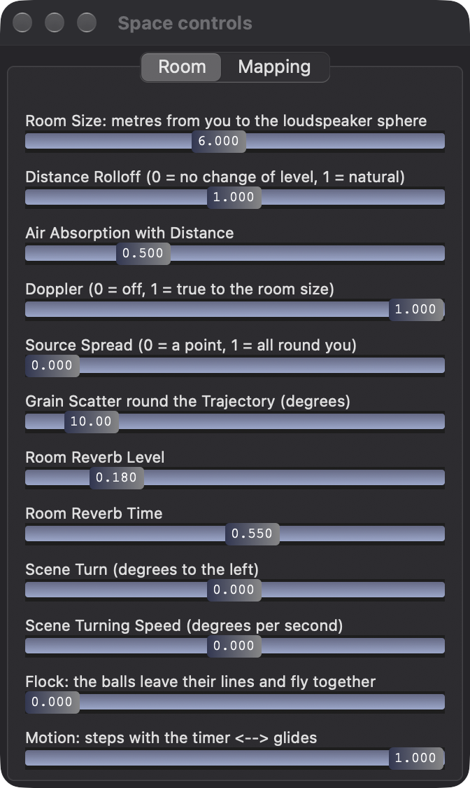
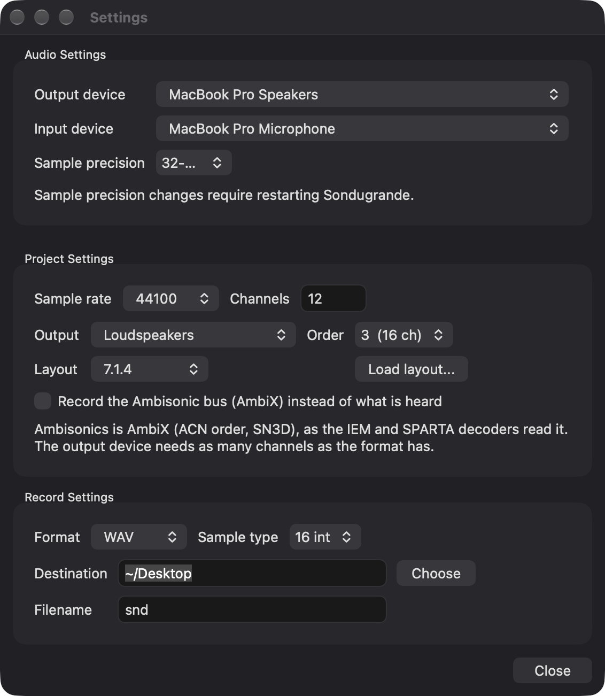
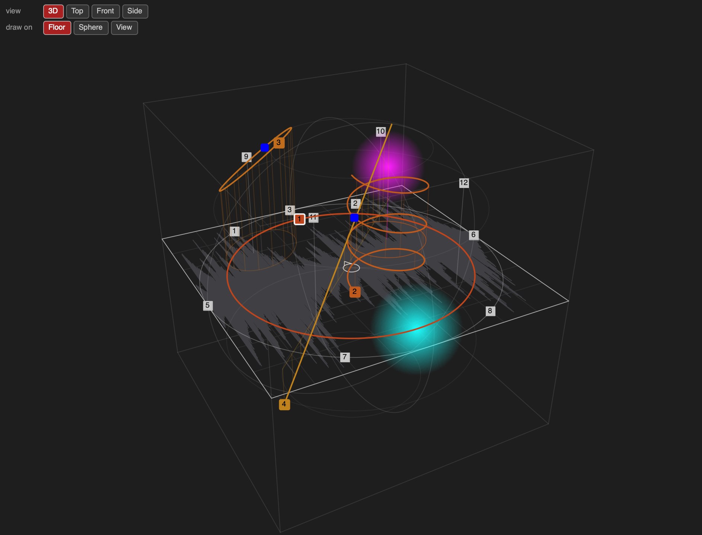

SoundGrain in a room: draw where the sound moves

M A N U A L
version 1.0 · a development of SoundGrain 6.1 by Olivier Bélanger · GNU General Public License 3
| 1. What Sondugrande is |
| 2. Installing it |
| 3. A first sound |
| 4. The window |
| 5. Looking at the room |
| 6. Drawing in three dimensions |
| 7. Changing what you drew |
| 8. Playing: timer, step, direction, width |
| 9. The grains: SoundGrain's X and Y in a room |
| 10. FX balls |
| 11. The Space Controls |
| 12. Where the sound goes: headphones, loudspeakers, Ambisonics |
| 13. Recording and rendering |
| 14. MIDI |
| 15. Projects, and SoundGrain itself |
| 16. If something seems wrong |
| 17. Every mouse action and key |
| 18. How it works, sources and credits |
SoundGrain, by Olivier Bélanger, is a granular synthesizer you play by drawing. You load a sound, its waveform fills the window, and you draw trajectories over it: a small ball runs along each one, and wherever it is, grains of the sound are played from that place. Left to right is the place in the sound; up and down is whatever you ask it to be (pitch, density, grain length and more).
Sondugrande is SoundGrain in a room. The waveform lies on the floor, you stand in the middle of it, and the pen can leave the floor. A trajectory still chooses its grains by where it is over the floor, exactly as in SoundGrain, and now the same line says where the sound is heard: to your left, behind you, overhead, close to your ear or far away. Draw a circle round yourself and the sound walks round you; pull the end of it up and it climbs.
Every trajectory is one stream of grains and one source in space, up to sixteen at once. All of them are encoded into one Ambisonic scene (AmbiX: ACN channel order, SN3D normalisation, 1st to 7th order, the format the IEM and SPARTA plug-ins use), and that scene is either sent out as it is, for a decoder of your own, or decoded inside Sondugrande for headphones, for two loudspeakers or for a loudspeaker layout.
Everything SoundGrain does is still there and works the same way: the four kinds of trajectory, the lowpass filter on the pen, the granulator controls, the Y axis, the FX balls, the envelope, MIDI, the equaliser and compressor, recording. SoundGrain itself, unchanged, comes with Sondugrande as a second application.
Each download holds two applications, Sondugrande and SoundGrain, this manual, an example project and the licence.
| macOS (Apple silicon) | Unzip and drag Sondugrande.app and SoundGrain.app to /Applications. They are not notarised: the first time, right-click the application and choose Open, or run xattr -dr com.apple.quarantine /Applications/Sondugrande.app /Applications/SoundGrain.app once in Terminal. macOS asks once whether Sondugrande may use the microphone (the Mic button records into the sound table). |
| Windows (64-bit) | Unzip the Sondugrande folder anywhere and start Sondugrande.exe or SoundGrain.exe. The two share the files in _internal: keep the folder together. SmartScreen may ask before the first start: More info, Run anyway. |
| Linux (x86-64) | Unpack the Sondugrande folder anywhere and run ./Sondugrande or ./SoundGrain. Built on Ubuntu 22.04; it needs GTK 3 and ALSA or JACK, which a desktop system has. |
| From the source | With Python 3.11 or later: pip install pyo wxPython numpy markdown, then python Sondugrande.py or python SoundGrain.py in the source folder. (On Linux, wxPython comes from your distribution or from extras.wxpython.org.) |
The first time Sondugrande starts it takes the audio and MIDI devices SoundGrain was set to, if SoundGrain has been used on the computer. After that it keeps its own settings.
The example project playing. Four trajectories, each with its ball; a delay ball (cyan) at the back and a reverb ball (magenta) up in the spiral.
| the room | takes the place of SoundGrain's drawing surface. The white square is the floor, at the height of your ears, with the sound's waveform on it; the small head in the middle is you, the nose pointing to the front; the circle round you is the loudspeaker sphere. The faint box is as far as anything can go. |
| view, draw on | the two rows of buttons at the top left: where the room is seen from, and what the pen draws on (chapters 5 and 6). |
| a trajectory | a coloured line with a numbered square at its start. Thin lines drop from it to the floor, where its shadow lies: that is how you read its height. Circles, oscillations and spirals also carry a blue square, to resize them. |
| a ball on a trajectory | where that stream of grains is now, with its foot on the floor. |
| the control panel | on the right, SoundGrain's: the kind of trajectory, the Draw, Var and Play tabs and a new 3D tab, the equaliser, the compressor, the level and its meter, Mic, Start and Rec Start. |
| the numbers at the bottom right | where the pen is: X (seconds into the sound), Y, Z (height), then azimuth, elevation and distance from you. |
| the status bar | the sound that is loaded, and anything Sondugrande has to tell you. |
The distances are in radii of the loudspeaker sphere. The floor is two radii wide. A sound on the sphere is at its normal level; inside it, nearer and louder; outside it (towards the corners of the room), further and softer.

Top: from above. This is SoundGrain's own surface.

Front: from behind you. Left - right and height.
| 3D P | from wherever you like. Drag with the right button, or hold Alt and drag, in an empty part of the room to walk round it. |
| Top T | from above, the front at the top of the picture. |
| Front F | from behind you, looking forward. The pen draws left - right and up - down. |
| Side S | from your left. The pen draws front - back and up - down. |
| the wheel | comes closer or steps back. Sideways (or with Shift) it turns the room. |
| Esc | puts the view back where it started. |
Looking changes nothing you hear. The flat views are the way to place something exactly: the Top view for where it is over the floor, the Front or Side view for how high.
A mouse moves over a flat screen, so the pen always draws on a surface, and one key lets it leave that surface.
| Floor | a level plane. It starts at ear level; Pen height in the 3D tab moves it up and down, and a blue square shows where it is. This is where to start. |
| Sphere | the loudspeaker sphere, on the side that faces you (walk round to reach the other side). Everything drawn on it stays at one distance from you, so only its direction changes. Sphere radius in the 3D tab makes it smaller or larger. Circles, oscillations and spirals are wrapped round it. |
| View | the plane that faces you, through the middle of the room. In the Front and Side views the pen always draws on this plane. |
The key G steps through the three.

A line drawn on the floor and pulled up on the way. The thin blue line is the pen's height.

Drawing on the sphere (blue). The line keeps its distance from you.
Hold Cmd (macOS) or Ctrl (Windows, Linux) while you draw, and move the mouse up or down: the pen goes straight up or down from where it is (on the sphere: in and out; on the view plane: towards you and away). Let go of the key and it goes on drawing at its new height. Hold and release as often as you like in one line: steps, slopes, a line that dives under the floor and comes back. The wheel does the same while the button is down.
| Free | free-hand. How fast you draw is how fast it plays, as in SoundGrain. With Closed on, the end is joined to the start when you let go. |
| Circle | press where its centre is and drag outwards. It lies in the surface you draw on: level on the floor, upright on the view plane, round a patch of the sphere. |
| Oscil | SoundGrain's oscillation, shaped by Oscil period and Oscil scaling in the Draw tab. |
| Line | a straight line from where you press to where you let go. Pull the pen up on the way and it is a line into the air. |
| Spiral | new: a circle that climbs, square to the surface it is drawn on. Oscil period is its number of turns, Oscil scaling how high it climbs (in radii of the spiral). |
The Lowpass cutoff and Q of the Draw tab smooth the pen as in SoundGrain, now in all three directions; a high Q makes it swing.
All of this is SoundGrain's, with height added. A drag is level (or in the plane facing you, in the Front and Side views and when drawing on the View plane). With Cmd / Ctrl held, or with the wheel, it is up and down.
| drag the numbered square | moves the trajectory. With Shift: all of them. |
| drag anywhere on the line | pulls that point, and its neighbours less and less (Drawing → Edition levels sets how many). With Cmd / Ctrl this lifts a stretch of a flat line into an arch; in the Front and Side views a plain drag does the same. |
| drag the blue square | resizes a circle, an oscillation or a spiral. |
| right-click the numbered square | deletes the trajectory. |
| Alt-click or double-click it | makes a copy, which you are then dragging. |
With the room in focus (click in it), these keys act on the selected trajectory. They are also in the Space menu, and Ctrl+Z undoes them.
| D M | a copy; a twin mirrored left to right (two lines of sound that answer each other across you) |
| H V U | flip left - right, front - back, up - down |
| R | turn 15° about the vertical (with Shift 5°, with Ctrl+Shift 1°) |
| X Y | tilt: X lifts its front, Y its side (Shift and Ctrl+Shift as for R) |
| [ ] | lower, raise |
| - = | smaller, larger |
| Z | wrap it onto the sphere: every point keeps its direction and goes to the distance of Sphere radius |
| B | flatten it to its mean height |
| arrows | move all trajectories over the floor; with Shift the selected one; with Cmd / Ctrl up and down |
| Delete | delete the selected trajectory |
| 1 to 8, 0 | freeze and unfreeze a trajectory's ball; all of them |
The Play tab is SoundGrain's, for the trajectory chosen in Selected Traj (or all).
| Timer speed | how often the ball takes a step, in milliseconds. |
| Point step | how many points it steps over each time. |
| Amplitude (dB) | the level of that trajectory. |
| Direction | new. Forward: to the end and again from the start, as in SoundGrain (an open line then jumps across the room). Backward. Back and forth: to the end and back the way it came, so the sound never jumps. |
The Var tab gives a trajectory a Width. In SoundGrain the ball then wanders from side to side of a band; in the room the band is a tube: the ball also wanders above and below the line. With Periodic <--> Random at periodic it corkscrews round the line, at the Variation speed.
The granulator is SoundGrain's, untouched: File → Open Granulator Controls (Ctrl+P) has the density, pitch, length and filter of the grains and their randomness, and its Y Axis tab says what the Y of a trajectory's point does to them. File → Open Envelope Window shapes the grain.
What is new is what X and Y are, now that a point has three coordinates. It is set in the Mapping tab of the Space Controls:
| X: the place in the sound | |
|---|---|
| Left - right | SoundGrain's own. The left wall is the start of the sound, the right wall its end. |
| Azimuth | the sound is laid round you, clockwise from the front, and drawn that way on the floor. A circle round you plays the sound through once. |
| Along the path | from the start of the trajectory to its end, wherever it goes. The place in the room is then free of the place in the sound. |
| Height | the floor of the room is the start of the sound, the ceiling its end. |
| Y: the Y-axis parameters | |
| Front - back | SoundGrain's own: the back wall is 0, the front wall 1. |
| Height | the floor of the room is 0, the ceiling 1: a climbing line rises in pitch, if pitch is what Y does. |
| Distance | 0 at your head, growing outwards. |
| Elevation | 0 straight below you, 1 straight above. |

X follows the azimuth: the waveform is drawn round the listener.
A grain needs sound after the place it starts at. SoundGrain falls silent when a trajectory reaches the right edge; in the room that edge is a wall, so Sondugrande holds the place in the sound at the last one a whole grain still fits after.
The FxBall menu adds SoundGrain's ten effects (reverb, delay, distortion, waveguide, complex resonator, degrade, harmonizer, clipper, flanger, detuned resonator; the harmonizer is rebuilt from two swept delay lines, as pyo's own gave no sound on some systems). In the room a ball is a sphere: a stream sounds through the effect while its ball is inside it, more the nearer it is to the middle, and the effect's sound comes out from where the FX ball is. A delay ball at the back of the room answers from the back.
| drag its middle | moves it (with Cmd / Ctrl: up and down) |
| drag its rim | resizes it |
| Shift-drag its middle up and down | how fast the send falls off towards its edge |
| right-click its middle | opens its sliders: the effect's two, Amplitude, and Spread (in place of SoundGrain's pan: 0 a point at the ball's centre, 1 from all round you) |
| Alt-click or double-click | deletes it |
Below them in the menu are ten more, after Pinkie Pie's Balloon Palace and Airwindows (Chris Johnson's plug-ins: the ideas, rebuilt from pyo's parts). Up to ten balls of any kind can be in the room at once.
| Ball | What it does | Its two sliders |
|---|---|---|
| Snow | the spectrum held ringing, as the Balloon Palace's snow freezes it | Freeze (long .. held), Frost (how bright the ice is) |
| Heat | a slow spectral wash that keeps drifting, the palace's heatwave | Smear, Shimmer (how far the partials wander) |
| Rpeg Ring Mod | a ring modulator whose carrier climbs with the input's loudness (the palace's, after Autechre's Rpeg) | Frequency, Follow |
| Spectral Gate | only the partials above the threshold come through | Threshold (dB), Damp (the quiet ones softened instead of cut) |
| Wind | gusts bend the pitch | Gusts (how often), Bend (how far) |
| Fog | every attack blurred by a mist of allpasses | Thickness, Cutoff |
| Galactic | a huge reverb whose tail drifts (after Airwindows' Galactic) | Size (seconds), Drift |
| ToTape | a tape echo: wow and flutter, the tape's soft saturation and lost top in the loop; changing the time glides (after ToTape) | Delay, Feedback |
| Distance | the sound far off: later, quieter, the air taking its top (after Distance) | Distance, Air |
| Ensemble | six voices, each its own slow drift (after Ensemble) | Depth, Speed |

File → Open Space Controls (Ctrl+L). Right-click a slider to give it a MIDI controller.
| Room Size | metres from you to the loudspeaker sphere. Sets how long sound takes to reach you and how much the air takes off. |
| Distance Rolloff | 1: the level follows 1 / distance (never more than +12 dB near your head). 0: distance does not change the level. |
| Air Absorption | far sounds lose their highs. |
| Doppler | a sound coming towards you rises in pitch, one going away falls, as much as the room size says. 0 turns it off. |
| Source Spread | 0 a point, 1 from all round you. |
| Grain Scatter | single grains land this many degrees away from the trajectory, all round it: a cloud in place of a point. |
| Room Reverb Level, Time | a room round the whole scene, heard from all round. Far sounds are wetter than near ones. |
| Scene Turn, Turning Speed | turn everything about you, by an angle or steadily. The head in the room turns the other way to show it. |
| Flock | the balls leave their lines and fly together, each on a leash to its own trajectory: drawn towards the others, along with them, and not too close. At 0 every ball is on its line. |
| Motion | right: the sound glides from one step of the ball to the next. Left: it jumps with the timer (try it with a slow Timer speed). |
Close to your head a sound spreads round it instead of flipping from one side to the other as it passes through.
Grain Scatter uses the granulator's own panning of single grains: each grain is born at one of four points round the trajectory's ball, or between two of them, and stays there. SoundGrain's Grains Panning Random and the Y axis's Grains Panning move grains round that cloud. A scattered stream is four times the work of a plain one.

File → Open Settings (Ctrl+;). The output is under Project Settings.
| Binaural (headphones) | two channels, for headphones. The default. |
| Stereo (two loudspeakers) | left and right. Height and front - back are not heard. |
| Ambisonics (to a decoder) | the scene itself, for a decoder of your own. |
| Loudspeakers | one channel per loudspeaker of the Layout. |
| Order | of the Ambisonic scene, 1 to 7. Higher is sharper, and more channels and work. 3 is a good place to stay. |
| Record the Ambisonic bus | Rec Start then writes the scene while you listen on headphones or loudspeakers. |
The output can be changed while audio is stopped; it restarts the audio engine. If the output device has too few channels for what you choose, the status bar says so and Sondugrande plays Binaural instead.
| Order | Channels |
|---|---|
| 1st | 4 |
| 2nd | 9 |
| 3rd | 16 |
| 4th | 25 |
| 5th | 36 |
| 6th | 49 |
| 7th | 64 |
The format is AmbiX: ACN channel order, SN3D normalisation, the front along +X, as the IEM Plug-in Suite and SPARTA expect. To play into a decoder in REAPER:

7.1.4: the loudspeakers stand in the room, numbered by output channel.
Layouts: Quad, 5.0, 5.1, Hexagon, 7.1, Octagon, Cube, 5.1.4, 7.1.4, Dome 8+4+1, Icosahedron, Sphere 16 and Sphere 24. The channel order is the usual one (L R C LFE Ls Rs ... then the top loudspeakers); an LFE channel gets no signal. Load layout... (also in the Space menu) reads a loudspeaker layout saved by the IEM AllRADecoder or SPARTA, a JSON file with each loudspeaker's azimuth, elevation and channel.
Rec Start records what goes to the output device, with all its channels, into the folder and under the name set in Settings (the date and time are added). With Record the Ambisonic bus ticked the file is the Ambisonic scene, named ..._ambix3_... for 3rd order.
A saved project can also be rendered without the window, faster than real time. In a terminal:
Sondugrande --render project.sgr out.wav --dur 60 --output Ambisonics --order 5
| --dur | seconds to render |
| --output | Binaural, Stereo, Ambisonics or Speakers (the project's own if left out) |
| --order, --layout | the order, 1 to 7; the name of a layout |
| --bus | write the Ambisonic scene whatever the output is |
| --sound, --sr | another sound file; another sampling rate |
On macOS the program is Sondugrande.app/Contents/MacOS/Sondugrande.
As in SoundGrain. Midi → Memorize Trajectory keeps the selected trajectory, with its height and all; after that every note played makes a copy of it, transposed by the note, placed front to back by how hard it was played (and left to right by its pitch, if Midi Settings says so), and takes it away again when the note ends. Right-click a slider of the Granulator Controls or of the Space Controls and move a controller to tie the two together.
Sondugrande saves .sgr files: everything in the room, the granulator, the space and the view. It also opens SoundGrain's .sg files: the surface becomes the floor, with every trajectory and FX ball in its place at ear level, and it sounds as it did, now round you. Saving then asks for a new .sgr file; the .sg file is left alone.
The output format belongs to the project and to the computer: a project saved with a 64-channel output still opens on a laptop, on headphones.
SoundGrain is the second application in the download: Olivier Bélanger's SoundGrain 6.1.0 as he wrote it, with its own documentation under its Help menu. The two keep separate settings and do not get in each other's way.
| No sound | Is a sound loaded (the status bar says)? Is there a trajectory, and does its ball move after Start? Is the right output device chosen in Settings? Is the Global amplitude up? |
| The sound is in my head, or does not move much | Binaural is for headphones; on loudspeakers choose Stereo or Loudspeakers. A sound drawn close to the head spreads round it on purpose: draw further out. |
| It says the device has too few channels | Ambisonics and loudspeaker layouts need one device channel each. Pick a device with enough in Settings, or a lower order. |
| Left and right are swapped in my decoder | Set the decoder to SN3D and ACN (AmbiX). In Sondugrande the front is the top of the Top view. |
| A trajectory will not start where I press | A press on a line pulls that line. Press where nothing is, or draw from another side of the room. |
| The pen will not go where I want on the sphere | It draws on the side that faces you. Walk round (right-drag) or use the Top view for the top half. |
| The pitch bends when things move | That is the Doppler effect. Turn Doppler down in the Space Controls, or make the Room Size smaller. |
| Clicks or dropouts with many trajectories | Lower the Order, or turn Grain Scatter to 0. Sixteen streams at 3rd order are light; at 7th order they are a great deal of work, and with scatter as well more than one processor core can do in real time (rendering offline always works). |
| The keys do nothing | Click in the room first, so that it has the keyboard. |
| In an empty part of the room | |
|---|---|
| drag | draw a trajectory |
| Cmd / Ctrl while dragging, or the wheel | pull the pen off its surface |
| right-drag, Alt-drag, middle-drag | walk round the room |
| wheel; sideways or Shift + wheel | closer and further; turn |
| On a trajectory | |
| drag the numbered square (Shift: all) | move |
| drag the line | pull it |
| drag the blue square | resize a circle, oscillation or spiral |
| right-click the numbered square | delete |
| Alt-click or double-click it | copy |
| On an FX ball | |
| drag the middle; the rim | move; resize |
| Shift-drag the middle; right-click; Alt-click | falloff; sliders; delete |
| Keys, with the room in focus | |
| P T F S Esc G | 3D, Top, Front, Side view; reset the view; next drawing surface |
| D M H V U R X Y | copy, mirrored twin; flips; turn and tilts |
| [ ] - = Z B | lower, raise; smaller, larger; onto the sphere; flatten |
| arrows (Shift: selected; Cmd / Ctrl: height) | move |
| Delete 1-8 0 9 | delete; freeze; SoundGrain's surprise |
| Menus | |
| Ctrl+N, O, S Shift+Ctrl+O, I, S | new, open, save; open soundfile, insert soundfile, save as |
| Ctrl+; Ctrl+P Ctrl+L Ctrl+E | Settings; Granulator Controls; Space Controls; Envelope |
| Ctrl+R Ctrl+T Ctrl+Z | start and stop; restart every ball; undo |
| Ctrl+1 ... Ctrl+0 | add an FX ball |
On macOS, Ctrl in the menus is Cmd.
Sondugrande is SoundGrain's own program with its drawing surface replaced by a room and its stereo output replaced by an Ambisonic scene. Each of the sixteen granulators (pyo's Particle2) gives out four signals instead of two, the corners of a small cloud round its trajectory's point, and pans every grain among them as the grain is born. Each of those goes through a delay as long as the sound's way to you (which is what bends the pitch of a moving sound) and a filter for the air, and is then weighted onto the channels of the scene by the spherical harmonics of its direction and by its distance. The weights glide from one step of the ball to the next, so nothing clicks. The FX balls and the room's reverb are sources in the same scene. SoundGrain's equaliser runs on every channel alike, and its compressor listens to the omnidirectional channel and turns all channels down together, so neither can bend the picture.
The scene is decoded for headphones with head-related filters fitted to the spherical harmonics by the magnitude-least-squares method (Schörkhuber, Zaunschirm and Höldrich, 2018), from the MIT KEMAR measurements of Gardner and Martin (1994) that come with pyo; for loudspeakers with the all-round Ambisonic decoder of Zotter and Frank (2012), max-rE weighted.
| SoundGrain | Olivier Bélanger, 2009-2018 and since. Sondugrande is a derivative work of SoundGrain 6.1.0 and, like it, free software under the GNU General Public License version 3. github.com/belangeo/soundgrain |
| pyo | Olivier Bélanger's audio engine for Python (LGPL), which makes every sound here. github.com/belangeo/pyo |
| wxPython, NumPy | the windows and the mathematics. |
| Ambisonic conventions | those of the IEM Plug-in Suite and SPARTA (AmbiX), so that Sondugrande's scene goes straight into their decoders. The distance model follows the IEM RoomEncoder's ideas; no code of theirs is included. |
| its relatives | the author's other spatial instruments, from which the distance and Doppler model, the grain scatter, the flock, the turning scene and the mirrored lines come: Pinkie Pie's Balloon Palace, Leitner (after Bernhard Leitner and Iannis Xenakis), openfield, Chloaeilius and ObliqSonic. |
| Sondugrande | femifleming, 2026, written with Claude Code. github.com/femifleming/sondugrande |